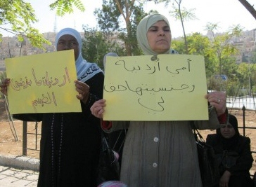

|
|
تظاهرات نشسته زنان در عمان
يكشنبه13 آذر 1390

تغییر برای برابری - اردن کشوری است که در سایه گزارشات مطبوعات جهان از انقلابات خاورمیانه و شمال آفریقا گم شده است. در اینجا ماههاست که زنان برای تغییر قانون اساسی در جهت رفع قوانین تبعیض آمیز، به تظاهرات نشسته در مقابل پارلمان می پردازند.
در بند 6 قانون اساسی اردن آمده است: همه اردنی ها در مقابل قانون برابر هستند. هیچگونه تبعیضی بین آنان در حقوق و تعهداتشان بدلیل نژاد، زبان و مذهب نباید وجود داشته باشد.
با توجه به چنین توضیحی می بایست حقوق زنان نیز تامین می شد، آنان نیز بدون تردید به گروه "اردنی ها" تعلق دارند؟ اما در عمل اینگونه نبوده است. بعنوان مثال زنان اردنی که با مردان خارجی ازدواج می کنند حق انتقال تابعیت خویش به فرزندانشان را ندارند. چیزی که این کودکان را در حاشیه قرار می دهد. از جمله به این دلیل زنان خواهان شفافیت قانون اساسی در زمینه جنسیت نیز هستند.
سازمان زنان عرب در اردن( 1) یکی از سازمانهایی است که در ماه جون گذشته تظاهراتی را در عمان براه انداخت تا برابری جنسی نیز در بند 6 قانون اساسی گنجانده شود. اعتراضات مستمر و رفرمهای سیاسی از ژانویه سال جاری در جریان بوده است. در ماه مای پارلمان اردن تصمیم گرفت قانون اساسی اردن را که در سال 1952 به تحریر در آمده بود مورد تجدید نظر قرار دهد. هدف از این کار از بین بردن تبعیض و پی ریزی قوانین جدید برای پرداختن به حقوق بشر، برابری و دمکراسی بود. همزمان کمپین سازمان زنان نیز آغاز شد.
لیلا نفه، عضو این سازمان می گوید -برای مبارزه با تبعیض جنسی نوشتار مشخص در قانون اساسی مهم و ضروری است. بنابر این ما با هفته ای یک روز تظاهرات نشسته در مقابل پارلمان شروع کردیم، صدها زن در آن شرکت کردند.
چیزی نمانده بود که تظاهراتها ثمر بخش باشد، اما بدلیل نامشخصی این فرمولبندی در لحظات آخر حذف شد. در نتیجه وقتی که قانوت اساسی جدید به امضای ملک حسین رسید هیچگونه تغییری در بند 6 داده نشده بود. اما سازمان زنان عقب نشینی نمی کند.
لیلا نفه می گوید -ما به جمع آوری امضاء ادامه می دهیم. جامعه مدنی برای ایجاد تغییر در سیاست و قوانین، سخت کار می کند. ما با استفاده ازهمه شیوه های صلحجویانه به مبارزه مان ادامه می دهیم.
1. Arab Women Organization of Jordan (AWO)
منبع تارنمای سوئدی از زن به زن
ترجمه ژاله معصومی